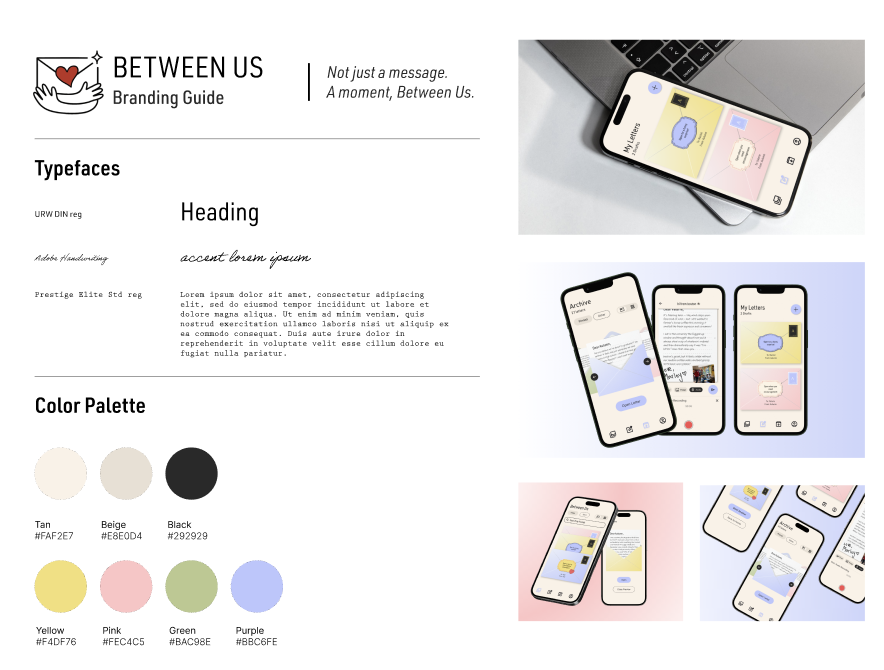
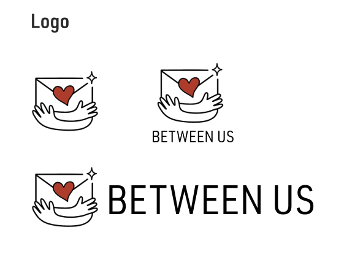
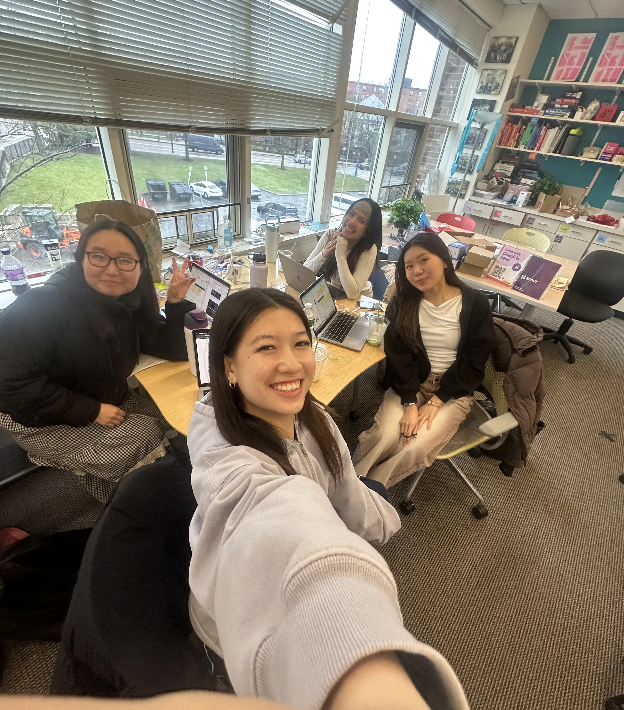

We all live a long way from home
Home for me is California. My family is still there, and so are a lot of my high school friends, but I went to school in Boston and now I’m in North Carolina. So the people I care about the most are also the ones who are the hardest to keep in touch with.
Our whole team felt the same way, since we were all studying far from home and juggling different schedules and time zones.
Sending a text is easy, and don’t get me wrong, I love getting a happy birthday text with the balloons on iMessage. But it means so much more when it’s a letter someone actually designed and made just for you, especially for a birthday or a big accomplishment. That feeling is what we wanted to bring back.
So when the CreateSC Designathon challenged us to design something personal that felt like an actual experience, we kept coming back to handwritten letters, and how special it feels to get one in the mail.
What would it feel like if sending a message made you slow down and actually mean what you wrote?”
The feeling of opening something made just for you
Between Us brings the feeling of a handwritten letter onto your phone. You build your own letter with photos, voice memos and sketches, then choose the exact moment you want it to arrive, so it feels like traditional letter writing, just digital.
There are no notifications and no read receipts, just a letter that’s there whenever you’re ready to open it, and whenever they wanted to send it to you. We wanted the whole experience to slow you down a little, so you really think about what you want to say to someone.
Four ways to make it yours
Designed to feel like the real thing
We wanted every step to feel like you’re doing it in person, even though it’s all on your phone. The letter seals and opens, you hear the sound of the paper ripping when you tear into it, the letter unravels, and you get to decorate your own envelope. Every detail was designed on purpose so it feels like a real experience and not just another message.
Letters stay sealed in your inbox until you’re ready to open them, kind of like a stack of mail waiting for you. And when you open one, it takes up the whole screen so you can just focus on reading it.
Soft, personal, analog at heart
We wanted the look to feel like paper and ink, with warm colors, soft textures and type that feels handpicked instead of coming from a template.
We didn’t want anything to feel too techy. Between Us should feel like something your grandma would recognize and your best friend would love.



We made it together
Between Us was made by a team of four: Autumn, Valerie, Tiffany and me. We all worked on every screen and every design together, from coming up with the idea to finishing the final prototype, and we spent the whole night sketching, giving each other feedback and refining it.
We also each took one part of the app and worked on it the most. Mine was checking your inbox: how your letters sit sealed and waiting, and how you scroll through them like a stack of mail.
- Autumn Fung
- Rachel Chen (me)
- Valerie Irawan
- Tiffany Zheng
Make it matter
We came in with a list of twenty ideas and left with four. That limit was the best thing that happened to the project. Every feature we kept had to earn its place, and the ones we cut would have watered down what made the idea worth building.
Honestly, we had no idea if it would work. We had a concept, a tight deadline, and a team running on coffee and conviction. What surprised me most wasn’t that we shipped it, but how good it felt to ship something I was actually proud of. Between Us didn’t happen because the conditions were perfect. It happened because we decided it would.
